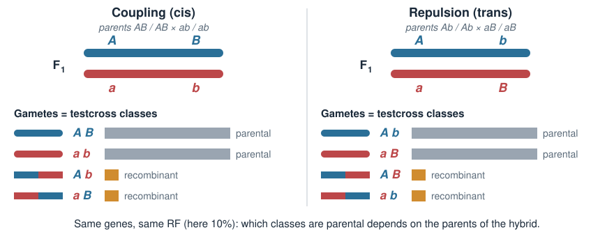
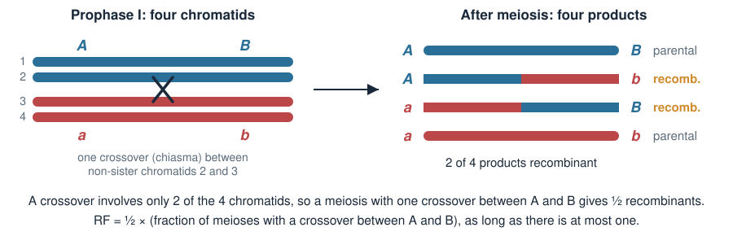
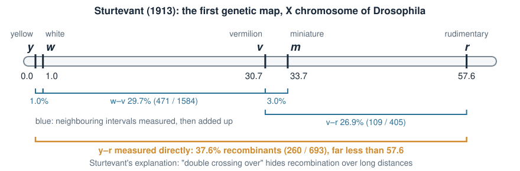
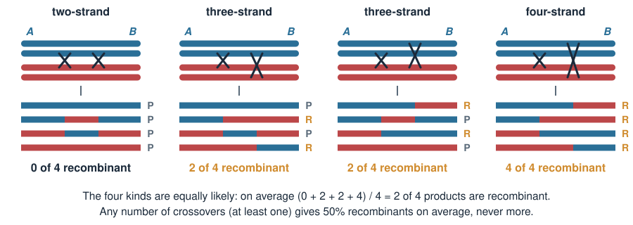
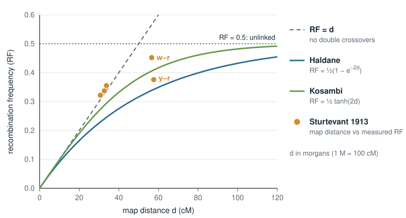

Part 2: Chromosomes and mapping. When independent assortment fails, and how that failure maps genes
Basic and molecular genetics (5MO104)
About this lecture
Mendel’s second law says that alleles of different genes go into gametes independently. That is only true for genes on different chromosomes, or far apart on one. Genes close together on a chromosome are linked: they tend to travel together. Measuring how much they travel together turns out to be a ruler for the chromosome.
Linkage: excess parental types in a testcross. Coupling and repulsion.
Recombination frequency (RF), and where recombinants come from: crossing over at the four-strand stage.
Map distance in centimorgans (cM), and Sturtevant’s first genetic map (1913).
Why RF never exceeds 50%, and map functions (Haldane, Kosambi) that correct for multiple crossovers.
Testing for linkage with the χ² test.
Book: Hartwell, Genetics: From Genes to Genomes, linkage, recombination and mapping chapter.
Independent assortment has exceptions
1905: Bateson, Saunders and Punnett crossed sweet peas differing in flower colour and pollen shape. The F2 was far from 9 : 3 : 3 : 1: the two parental combinations were much too common. They called it coupling (and, for the reverse arrangement, repulsion), without an explanation.
1911: Thomas Hunt Morgan saw the same in Drosophila with X-linked genes, and proposed the explanation: the genes are on the same chromosome, and they are separated only when the homologues exchange segments.
For a dihybrid testcrossAaBb × aabb, recall what Mendel predicts:
Unlinked genes (Mendel)
Linked genes
4 classes, 1 : 1 : 1 : 1
4 classes, 2 large + 2 small
50% new combinations
less than 50% new combinations
A testcross with linked genes
Drosophila: pr (purple eyes) and vg (vestigial wings), both recessive, both on chromosome 2. F1 females from pr+vg+ / pr+vg+ × pr vg / pr vg are testcrossed to pr vg / pr vg males.
Invented teaching numbers, consistent with the real pr–vg distance in FlyBase.
Coupling and repulsion

Coupling (cis): the two dominant alleles on one homologue, A B / a b.
Repulsion (trans): one dominant allele on each homologue, A b / a B.
“Parental” means as in the chromosomes the F1 received, not “dominant” or “wild type”.
Recombination frequency
\text{RF} = \frac{\text{number of recombinant offspring}}{\text{total number of offspring}}
RF
Meaning
0
complete linkage: no recombinants at all (genes very close)
between 0 and 0.5
linked: parental types in excess
0.5
unlinked: 1 : 1 : 1 : 1, as for genes on different chromosomes
RF is a property of the pair of genes (and of the organism and sex), not of the cross: coupling and repulsion give the same RF.
RF is measured in gametes. A testcross lets you count them directly.
The larger the distance between two genes on the chromosome, the larger the RF, up to 0.5.
Where recombinants come from: crossing over
Recap from Chromosome theory & sex linkage: in prophase I, homologous chromosomes pair. Each is already replicated into two sister chromatids, so the pair (a bivalent) has four chromatids.
Non-sister chromatids can break and rejoin, swapping segments: a crossover.
Under the microscope a crossover is a chiasma (plural chiasmata), where non-sister chromatids cross.
Most chromosome pairs need at least one chiasma to segregate correctly in meiosis I.
Physical proof (1931): Creighton & McClintock in maize, and Stern in Drosophila, used chromosomes with visible marks. Genetic recombinants always carried the physically swapped chromosome.
The four-strand stage

A crossover involves 2 of the 4 chromatids. The other two stay parental.
So a meiosis with one crossover between A and B gives 2 parental and 2 recombinant products: 50%, not 100%.
If a fraction f of meioses have one crossover between A and B (and none have two): RF = f / 2.
From RF to map distance
Map unit or centimorgan (cM): the distance in which, on average, 1 crossover per 100 chromatids occurs.
For short distances, a crossover rarely happens twice, so 1 cM ≈ 1% recombinants: pr–vg RF = 11.5% → about 11.5 cM.
Equivalently: d (in morgans) = expected number of crossovers per chromatid = ½ × mean number of chiasmata in the interval.
Map distances add up: if A–B = 5 cM and B–C = 8 cM, then A–C = 13 cM (if B is in the middle).
Additivity gives the gene order: the gene in the middle is the one whose two distances add up to the third.
Named after Morgan; 100 cM = 1 morgan (M).
Sturtevant’s first genetic map (1913)

Alfred Sturtevant, an undergraduate in Morgan’s lab, put five X-linked genes in order using his own and others’ crosses: y – w – v – m – r. The order still holds. Data: J. Exp. Zool. 14: 43–59 (1913).
Why RF can never exceed 50%

Two crossovers between A and B can involve 2, 3 or 4 of the chromatids, and on average give 50% recombinants.
More generally: a chromatid is recombinant for A and B if it has an odd number of crossovers between them, and parental if even (0, 2, 4…).
As the distance grows, odd and even become equally likely, so RF → 0.5. A double crossover inside the interval is invisible with two markers.
RF underestimates long distances
Map distance (sum of short intervals)
RF measured directly
y – w
1.0 cM
1.0%
v – m
3.0 cM
3.0%
y – v
30.7 cM
32.2%
w – r
56.6 cM
45.2%
y – r
57.6 cM
37.6%
Sturtevant (1913). Short distances: RF ≈ map distance. Long distances: RF falls below the map distance, because double crossovers are missed.
Rule: build maps from short intervals, then add. Never read a long RF directly as map distance.
Map functions: Haldane
A map function converts between map distance d (in morgans) and RF. Haldane (1919) assumed crossovers occur independently, at random along the chromosome (a Poisson process).
Number of crossovers on a chromatid in the interval: Poisson with mean d.
Recombinant if that number is odd: P(odd) = ½(1 − e−2d).
Back the other way: y–r, RF = 0.376 → d = −½ ln(1 − 0.752) = 0.70 M = 70 cM.
Map functions: Kosambi, and interference

Real crossovers are not independent: one crossover makes another one nearby less likely. This is interference, measured properly in Three-point crosses.
Just significant at 5%: weak evidence for linkage, RF ≈ 18/50 = 0.36. More offspring would settle it.
Real maps: some facts
Sex differences.Drosophilamales have no meiotic crossing over: their genes are completely linked. That is why mapping crosses use F1females. In humans the female map is roughly one and a half times longer than the male map.
cM is not bp. In humans, about 1 cM ≈ 1 Mb on average, but crossovers cluster in hotspots, and are rare near centromeres.
Same chromosome ≠ linked. Genes more than about 50 cM apart on one chromosome assort (nearly) independently. y and r on the Drosophila X are about 54 cM apart in FlyBase.
Uses. Gene order and distance; finding markers close to a gene of interest, for plant and animal breeding and for human disease genes.
Summary
Concept
Key fact
Linkage
genes close on one chromosome: parental combinations in excess, RF < 0.5
Coupling / repulsion
A B / a b vs A b / a B: same RF, opposite parental classes
Recombination frequency
RF = recombinants / total offspring of a testcross
Crossing over
between non-sister chromatids at the four-strand stage; one crossover → 2 of 4 products recombinant
Map distance
1 cM = 1 crossover per 100 chromatids; ≈ 1% RF for short distances; distances add
RF ≤ 0.5
recombinant ⇔ odd number of crossovers; multiple crossovers make RF level off at ½
check 1 : 1 per gene, then parental vs recombinant against 1 : 1, df = 1
Where this leads
Next: Three-point crosses. With three genes in one testcross, the double crossovers become visible: they give the gene order at once, and show whether crossovers interfere with each other.
Human linkage & LOD scores. In human families there are no testcrosses and few offspring. The LOD score asks how much more likely the data are under linkage than under RF = 0.5, and maps disease genes such as HTT.
Rearrangements & aneuploidy (Part 5): inversions suppress recombination in heterozygotes, and a chromosome without a crossover can missegregate.
Complex traits (Part 7): genome-wide association is linkage thinking on a population scale.